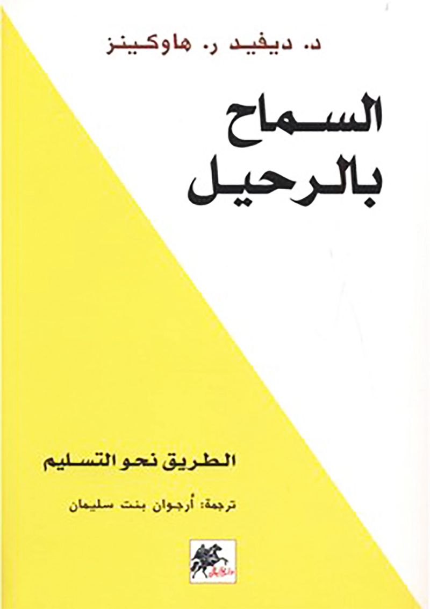
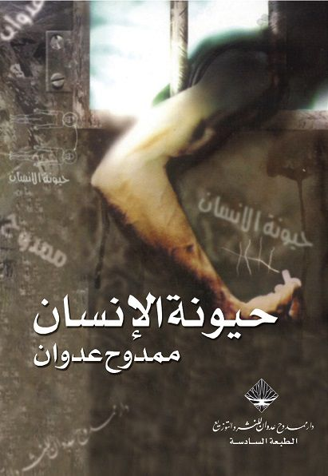

كتب علم الاجتماع
مرر المؤشر على غلاف الكتاب لقراءة نبذة سريعة عنه.

السماح بالرحيل
يشرح الكتاب آلية بسيطة وفعالة للتخلص من معوقات التنوير والتحرر من السلبية، ويقدم طرقاً عملية لتخفيف معاناة البشر في الصحة، الإبداع، النجاح، العلاقات، والنضج الروحاني.

أصل التفاوت بين الناس
يوضح روسو كيف أن تطور الإنسان وحشد المعارف أبعده عن حاله الأصلي، ويفسر الفروق بين الناس باعتبارها نتائج التحولات الطبيعية والتغيرات التي طرأت على تكوين الإنسان عبر الزمن.

حيونة الإنسان
يناقش الكتاب تأثير عالم القمع على الإنسان وتحويله إلى كائن شبه حيواني، ويستعرض أثر هذا الواقع على نمو الإنسانية، مع تقديم تصور أدبي وعلمي للإنسان الذي يجب أن يكون.